Выше мы обсудили лингвистические вопросы, связанные с основным кораблем греческих флотов архаической и классической эпох – пентеконтерой. Теперь перейдем к рассмотрению особенностей конструкции этого корабля.
Ранние изображения таких кораблей можно увидеть, в частности, на так называемых «сковородках» («frying pans») – терракотовых изделиях раннего Бронзового века, украшенных гравировкой.
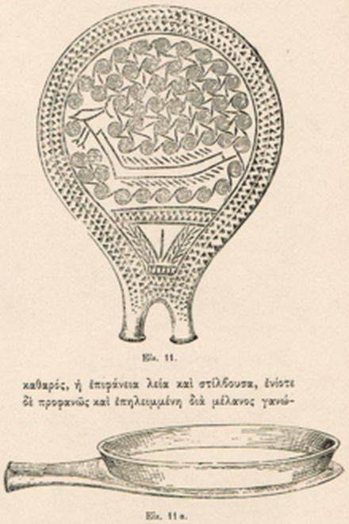
«Frying pan» из захоронения на острове Сирос (140 км к Ю.-В. от Афин. Раннекикладский период (2800-2300гг. до н.э.) кикладской цивилизации.
Внешняя поверхность этих «сковородок» (есть предположение, что они использовались как «жидкие зеркала» (Tsountas, 1899)) покрыта декоративными изображениями, в том числе изображениями кораблей той эпохи.
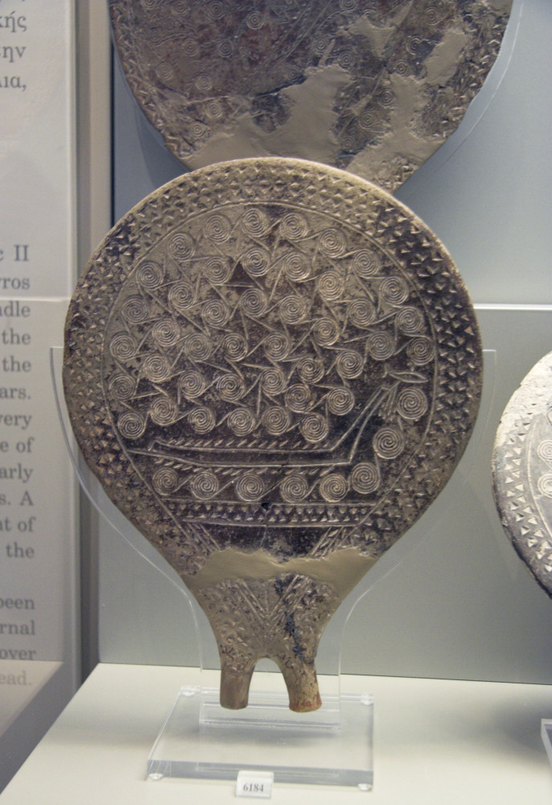
«Frying pan» из Национального Археологического Музея Афин
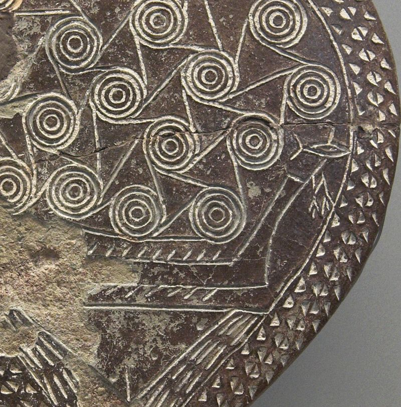
Деталь предыдущего изображения в увеличенном виде.
Мы уже встречались с подобными изображениями, когда, рассказывая о появлении термина «триера» в поэзии Гиппонакта, показали борта кораблей, украшенных рисунками змей. Они также скопированы со «сковородок».
Литературные описание гребных судов на ранних этапах их развития мы встречаем в Илиаде Гомера. Основная задача длинных кораблей того времени – доставлять воинов с их вооружением к месту конфликта на суше. Греки не имели тогда специальных транспортных кораблей для перевозки войск. Повторим свидетельство Геродота:
Жители этой Фокеи первыми среди эллинов пустились в далекие морские путешествия. Они открыли Адриатическое море, Тирсению, Иберию и Тартесс. Они плавали не на “круглых” торговых кораблях, а на 50-весельных судах
Геродот, (1.163)
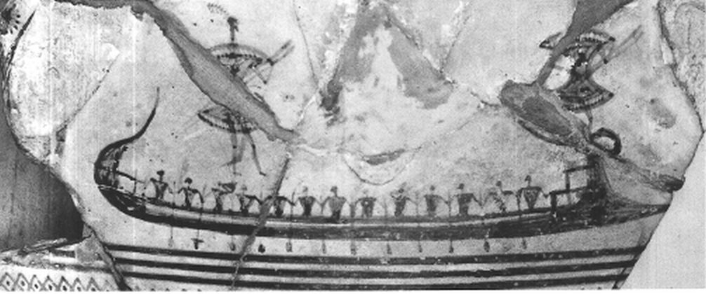
Беспалубный греческий корабль. Фрагмент сосуда для смешивания вина (середина VIII в. до н.э.). Лувр
Именно на изображениях этих судов появляются выступающие вперед части, напоминающие таран у более поздних греческих кораблей. Гомер называет их στεῖρα . Дворецкий переводит это слово как «стем, форштевень (верхнее продолжение киля)», Георг Аутенрит аналогично - fore part of the keel, stem, cut-water, словарь Лиддела-Скотта (LSJ) – forepart of a ship's keel, continued into the stem or cutwater, т.е. фактически это та часть набора судна, которую мы называем грепом. Переводчики называют эту часть корабля просто «носом», как в следующем примере при переводе строки ἀμφὶ δὲ κῦμα στείρῃ πορφύρεον μεγάλ᾽ ἴαχε νηὸς ἰούσης:
Но лишь взошла розоперстая, рано рожденная Эос,
В путь они двинулись снова к пространному стану ахейцев.
Ветер попутный ахейцам послал Аполлон Дальновержец.
Белые вверх паруса они подняли, мачту поставив,
Парус срединный надулся от ветра, и ярко вскипели
Воды пурпурного моря под носом идущего судна;
Илиада, 1.482, Пер. Вересаева
Анализ синхронных по времени с Гомером изображений показывает, что steira, выступая вперед, является продолжением киля, формируя так называемый клювообразный нос.
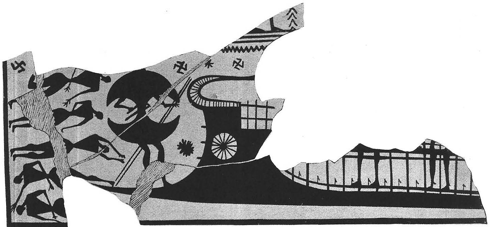
Нос корабля. Фрагмент кубка для смешения вина. Лувр
Этот девайс, напоминая таран, таковым не является. Он предназначался совсем для других целей.
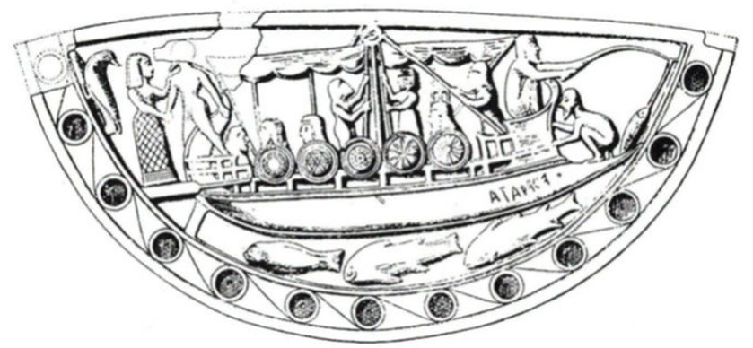
Развитие греческого военного корабля мы можем отслеживать, начиная с седьмого века до н.э. Именно к этому времени корабли стали не только средством перемещения грузов и войск по морю, но и полноправными участниками морских сражений. Ранее мы приводили описание сражения при Алалии (морское сражение между греческим и объединённым этрусско-карфагенским флотами, произошедшее в 539 году до н.э.) из Истории Геродота, в котором впервые в греческой литературе упоминаются корабли с таранами.
Если мы перейдем от литературных источников к дошедшим до нас изображениям, то заметим достаточно много кораблей, предположительно снабженных таранами, и ранее этой даты, некоторые из которых мы показали выше. Однако существует проблема идентификации: действительно ли таран изображен на картинке или это еще один вид волнореза, деталь фендерса или какого-дибо другого корабельного девайса?
Скрупулезный анализ античных изображений показывает, что далеко не всякое изображение некоего выступающего вперед элемента корабельной конструкции является тараном. Иными словами, не все, что выступает за границы форштевня является оружием. Ибо тараном мы называем именно оружие корабля. Точнее, корабль, снабженный тараном сам превращается в оружие, в наступательное оружие, способное потопить корабль противника. Вот какое определение тарана дает известный исследователь античных кораблей
A strong proection on the bow of an ancient warship, usually sheathed in metal, used as weapon to strike another vessel. Specifically, the ram included the ramming timber, the forward bow timbers configurated to reinforce the ramming timber, and a metal sheath; in actual practice, the metal sheath is usually called the ram.
Мощная выступающая часть на носу античных судов, обычно обшитая металлом, которая используется как оружие для нанесения поражения другому судну. Таран включает в себя собственно ударный брус, брусья носовой части корабля, предназначенные для укрепления ударного бруса и металлическое покрытие; в обычной практике тараном называют именно этот металлический кожух.
John Richard Steffy (1994) - Wooden Ship Building and the Interpretation of Shipwrecks
Для того, чтобы отличать суда, снабженные тараном, от всяких других, имеющих выступ в носовой части, Лионелл Коэн сформулировал следующие необходимые признаки:
For the sake of clarity, it will be well to state at the outset exactly what we understand by "rammed vessels." The characteristics, inferred from later vessels like those on Dipylon vases (fig. 1),I dated in the ninth and eighth centuries B.C., are the following: (1) The ram is placed at the water-line. (2) The ram necessarily projects a substantial distance, in order to protect the bows of the ship. (3) The prow is of massive construction to withstand the impact of ramming. (4) The ornament on the prow is bent sternward (otherwise it would be snapped off in collision).
Для ясности полезно будет привести точные признаки того, что мы понимаем под «кораблем с тараном». Характеристики, которые я извлек, изучая более поздние корабли, изображенные на вазах Дипилона (рис.1) (я датировал их девятым и восьмым веками до н.э.), следующие: (1) таран располагается на уровне ватерлинии; (2) таран обязательно выступает на существенное расстояние, чтобы обеспечить защиту носовой части своего корабля; (3) нос имеет массивную конструкцию, чтобы выдержать ударные нагрузки при таране; (4) носовые украшения смещены ближе к корме, (иначе они будут сметены при ударе).
Cohen, L. (1938). Evidence for the Ram in the Minoan Period.стр.487
На "Рис. 1" Коэн приводит следующие изображения;
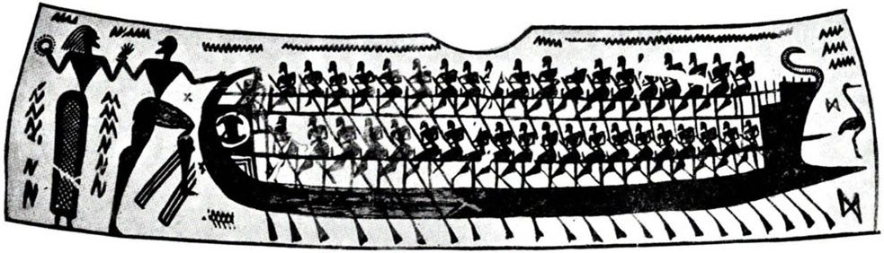
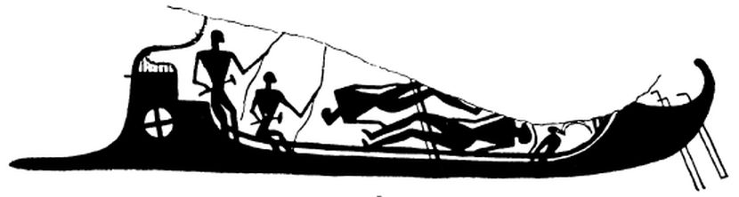
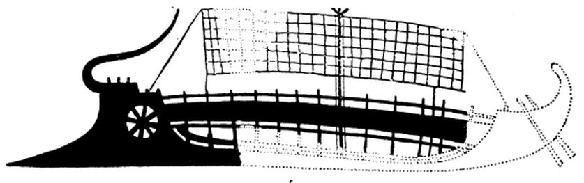
На ранних этапах развития Греции мы не встречаем никаких следов использования тарана как оружия ни в литературе, ни в изобразительном искусстве. Поэтому вряд ли изображения, которые выдаются некоторыми учеными за ранние тараны, могут считаться таковыми. По крайней мере до эпохи позднего Бронзового века – начала Железного века. Лишь в конце восьмого-начале седьмого веков до н.э. политическое развитие греческих городов-полисов позволило создавать морские соединения, включающие в себя боевые корабли, оснащенные таранами. Возможно, что первые тараны использовались в древнейшей морской битве между флотами Коринфа и Керкиры, о которой нам сообщает Фукидид:
Древнейшая морская битва, как нам известно, произошла у коринфян с керкирянами (а от этой битвы до того же времени прошло около двухсот шестидесяти лет).
Фукидид,1.13. Пер. Стратановского
Историки посчитали, на основании этого отрывка из Фукидида, что эта битва произошла в 660 или 680 г. до н.э. К сожалению, никаких других сведений о данном сражении нет. Но именно в это время появляются изображения кораблей с выступающими вперед носовыми частями, которые вполне логично считать таранами. Как например уже рассматриваемые нами изображения на вазе Аристонота
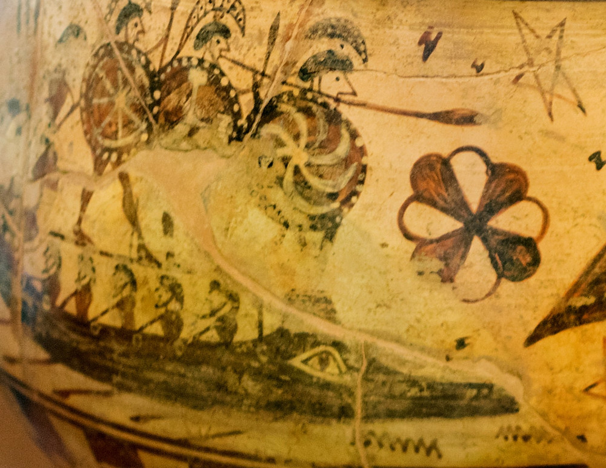
Впрочем, не все исследователи принимают такую позднюю дату рождения тарана. Лионел Кассон, например, считает весьма вероятным, что таран на кораблях появился в «темный период истории Греции после 1000 г. до н.э.», отмеченный переходом от Бронзового к Железному веку.
Британский археолог Энтони Снодграсс в интересной работе The Dark Age of Greece: An Archeological Survey of the Eleventh to the Eighth Centuries B.C. приводит изображение, выгравированное на фибуле (большая булавка для верхней одежды) из захоронения на древнем кладбище Афин Керамикос.
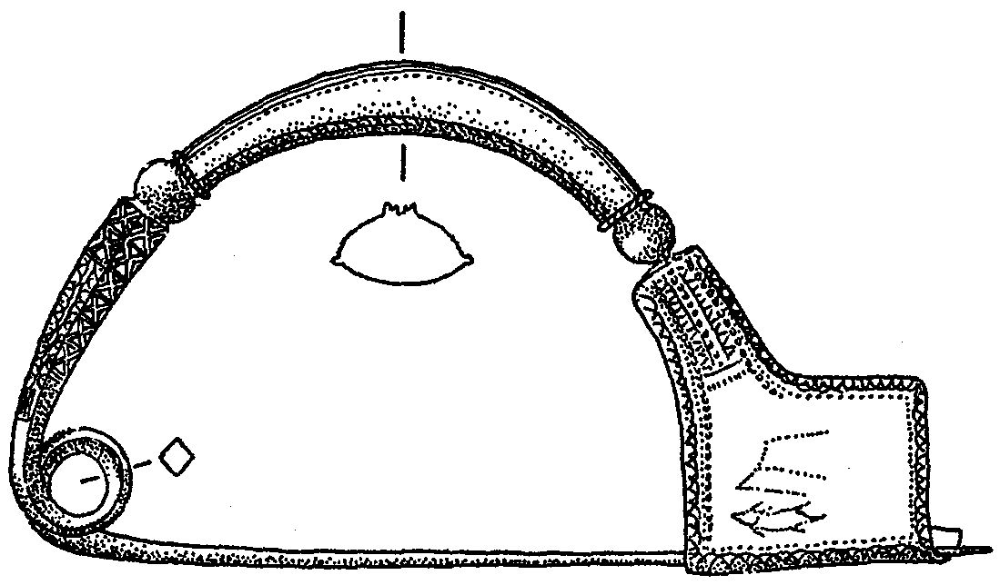
Большая бронзовая фибула, длина 14,5 см, из захоронения Геометрического периода №41 на кладбище Керамикос в Афинах (ок. 850 г. до н.э.)
Гравировка изображает носовую часть корабля с выступом, напоминающим таран.
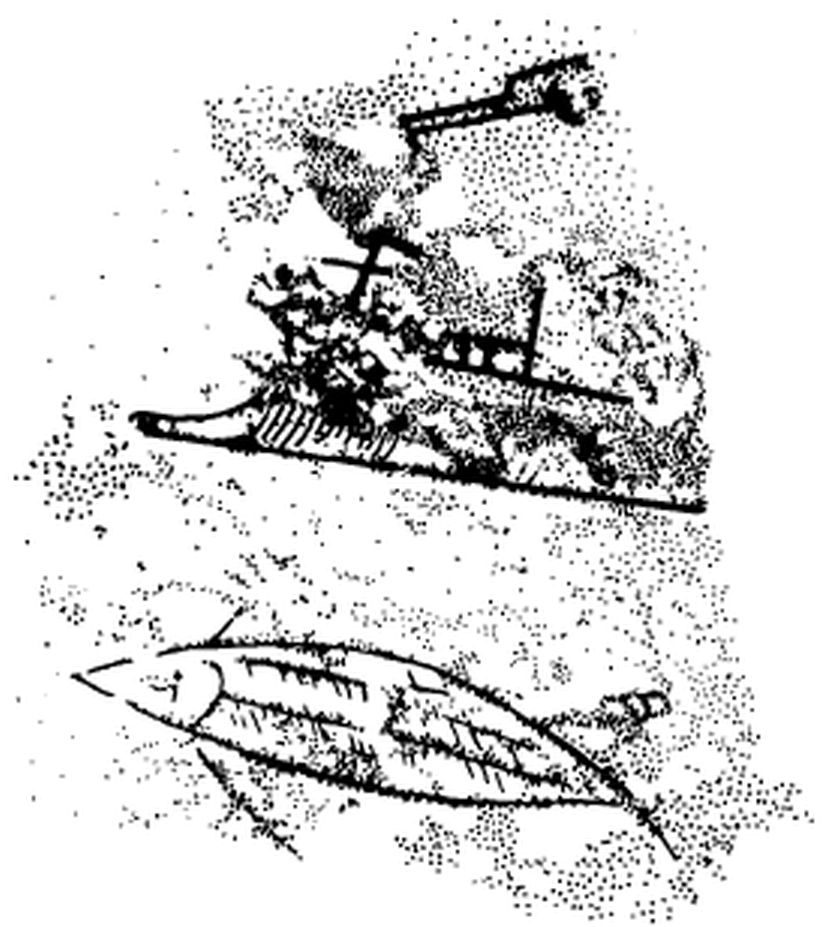
Изображение корабля на защелке фибулы. (Kübler (1954)
Мы уже несколько раз в своих записках обсуждали и другие выступы и аппендиксы в носовой и кормовой частях античного корабля. См. например, здесь. Добавим к приведенным там рассуждениям несколько слов, касающихся кораблей VII – VI в. до н.э., изображенных на так называемой Стеле из Новилары.
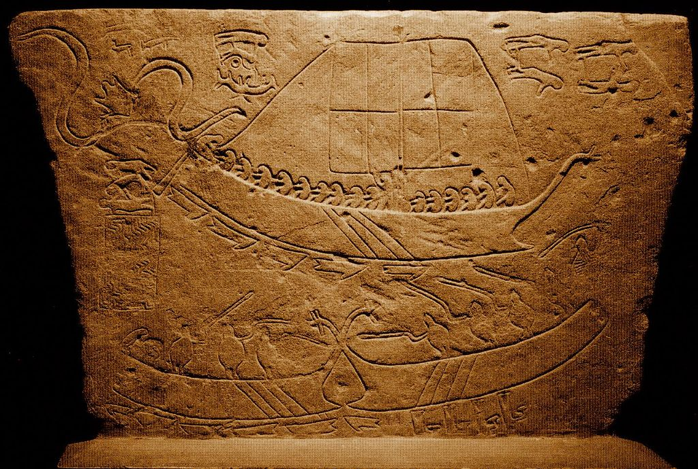
Остатки стелы в настоящее время находятся в итальянском городе Пезаро, регион Марке, в археологическом музее Museo Archeologico Oliveriano. Видимо, стела была частью надгробного монумента. Ввиду того, что на месте раскопок встречались артефакты как VII, так и VI вв. до н.э., точная датировка этой находки пока невозможна. Существуют различные интерпретации изображенного на стеле морского боя: либо это просто морской праздник местных купцов, либо защита местного корабля от греческго пирата, либо, наоборот, пиратский захват местными моряками греческого судна. Изображенные здесь суда представляют собой гибрид местных и греческих традиций кораблестроения. Нас сейчас интересуют выступы в носовой части кораблей, которые могут быть интерпретированы как тараны. Посмотрим на графическую реконструкцию верхнего корабля со стелы, сделанную Марко Бонино:
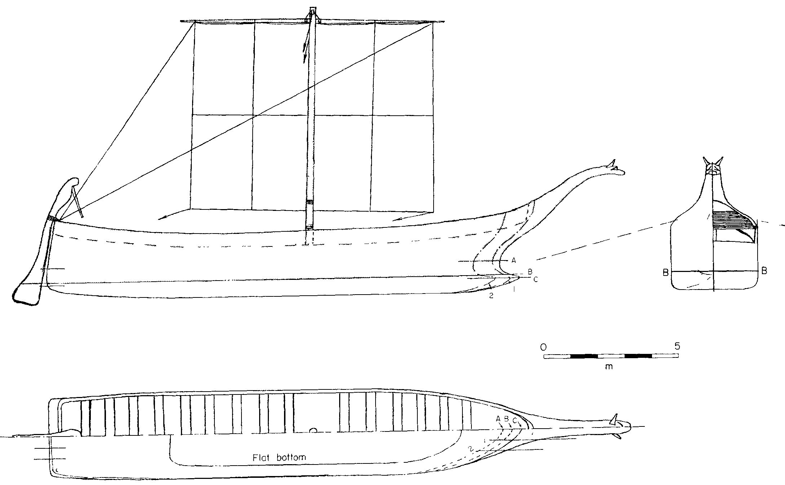
Мы видим выступ в носовой части на уровне ватерлинии, который в некоторых работах интерпретируется как таран. Однако, этот выступ вряд ли может быть таковым. Судя по изображению, невозможно нанести таранный удар по кораблю противника, не повредив при этом конструкции своего корпуса. Акростоль с изображением головы животного выдается слишком далеко вперед. Кроме того, конструкции носовой части слишком легкие, чтобы воспринять ударные нагрузки в момент тарана. Для сравнения посмотрим на терракотовую модель из Лувра, описанную Люсьеном Башем, и ее реконструкцию:
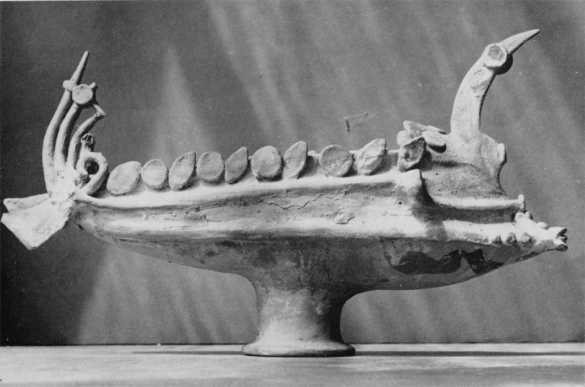
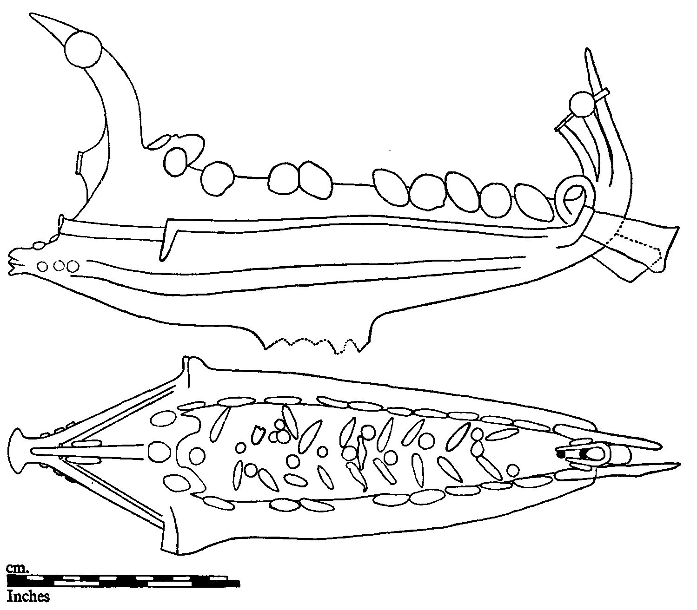
Одного взгляда на конструкции носа модели корабля, действительно предназначенного для использование тарана в бою, и сравнения его со слабыми носовыми конструкциями нашего корабля из Новилары достаточно, чтобы убедиться в неправомерности называть носовые выступы на форштевне последнего тараном.
Так как же тогда назвать этот и ему подобные выступы? Глубоко изучивший тему Марко Бонино предлагает для него название «skid», хотя этот термин скорее применим к фендерсам, брусьям, предохраняющим корпус корабля при погрузочных и разгрузочных работах. Он считает, что скид предназначен для улучшения маневренности судна при ходе под парусом, особенно вблизи низкого, не защищенного от ветров берега. Скид увеличивает плавучести носа и дает увеличение общей длины киля, что способствует уменьшению дрейфа и стабилизации судна на курсе.
К.Саймонсен называет этот обтекаемый выступ «bulgy» – выпуклость,утолщение – и описывает его просто как увеличенный греп, замóк в носовой части киля для соединения его с форштевнем.
Как бы мы ни незывали этот девайс, вывод один – это не таран. И нет никаких доказательств, если не считать умозрительных гипотез, что таран появился ранее VI в. до н.э., а возможно даже и в V веке. Именно тогда мы отмечаем изменения в конструкции корпуса греческих кораблей, послужившие значительному повышению его прочности, а также заметный рост производительности бронзолитейных предприятий.
Но наш рассказ затянулся, поэтому продолжим его в следующий раз. Мы обсудим тогда, к чему привело появление тарана, почему возникла потребность в повышении скорости корабля, которое могло быть достигнуто в первую очередь за счет увеличения числа гребцов.